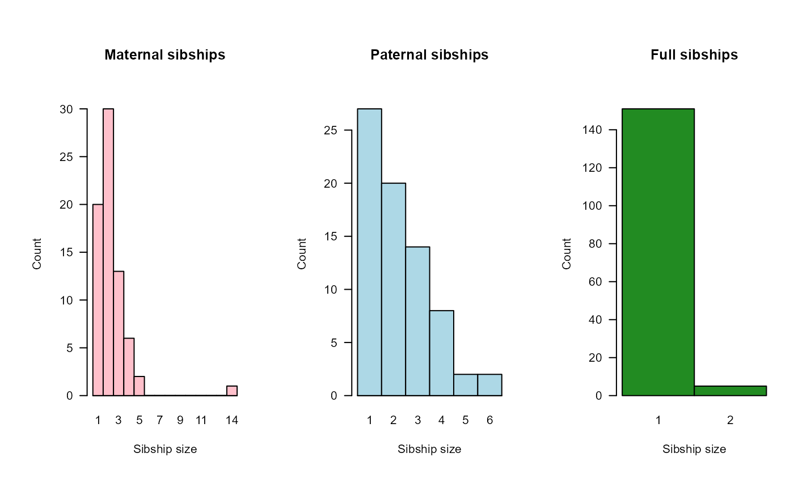
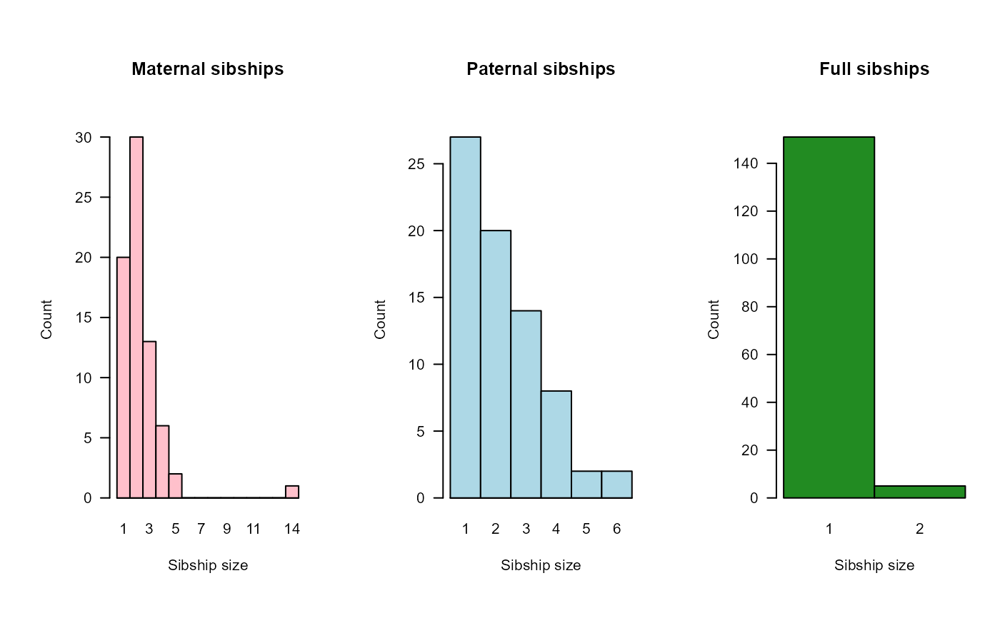

Summarise Sequoia Output or Pedigree
SummarySeq.RdNumber of assigned parents and grandparents and sibship sizes, split by genotyped, dummy, and 'observed'.
Usage
SummarySeq(
SeqList = NULL,
Pedigree = NULL,
DumPrefix = c("F0", "M0"),
SNPd = NULL,
Plot = TRUE,
Panels = "all"
)Arguments
- SeqList
the list returned by
sequoia. Only elements 'Pedigree' or 'PedigreePar' and 'AgePriors' are used. All ids in 'PedigreePar', and only those, are presumed genotyped.- Pedigree
dataframe, pedigree with the first three columns being id - dam - sire. Column names are ignored, as are additional columns, except for columns OHdam, OHsire, MEpair, LLRdam, LLRsire, LLRpair (plotting only).
- DumPrefix
character vector of length 2 with prefixes for dummy dams (mothers) and sires (fathers). Will be read from
SeqList's 'Specs' if provided. Used to distinguish between dummies and non-dummies. Length 3 in case of hermaphrodites.- SNPd
character vector with ids of SNP genotyped individuals. Only used when
Pedigreeis provided instead ofSeqList, to distinguish between genetically assigned parents and 'observed' parents (e.g. observed in the field, or assigned previously using microsatellites). IfNULL(the default), all parents are presumed observed.- Plot
show barplots and histograms of the results, as well as of the parental LLRs, Mendelian errors, and agepriors, if present.
- Panels
character vector with panel(s) to plot. Choose from 'all', 'G.parents' (parents of genotyped individuals), 'D.parents' (parents of dummy individuals), 'sibships' (distribution of sibship sizes), 'LLR' (log10-likelihood ratio parent/otherwise related), 'OH' (count of opposite homozygote SNPs).
Value
A list with the following elements:
- PedSummary
a 2-column matrix with basic summary statistics, similar to what used to be returned by Pedantics'
pedStatSummary(now archived on CRAN). First column refers to the complete pedigree, second column to SNP-genotyped individuals only. Maternal siblings sharing a dummy parent are counted in the 2nd column if both sibs are genotyped, but not if one of the sibs is a dummy individual.- ParentCount
an array with the number of assigned parents, split by:
offspringCat: Genotyped, Dummy, or Observed* (*: only when
Pedigreeis provided rather thanSeqList, for ids which are not listed inSNPdand do not conform toDumPrefix+ number (i.e. (almost) all individuals whenSNPd = NULL, the default).offspringSex: Female, Male, Unknown, or Herm* (*: hermaphrodite, only if any individuals occur as both dam and sire). Based only on whether an individual occurs as Dam or Sire.
parentSex: Dam or Sire
parentCat: Genotyped, Dummy, Observed*, or None (*: as for offspringCat)
- GPCount
an array with the number of assigned grandparents, split by:
offspringCat: Genotyped, Dummy, Observed*, or All
grandparent kind: maternal grandmothers (MGM), maternal grandfathers (MGF), paternal grandmothers (PGM), paternal grandfathers (PGF)
grandparentCat: Genotyped, Dummy, Observed*, or None
- SibSize
a list with elements 'mat' (maternal half + full siblings), 'pat' (paternal half + full siblings), and 'full' (full siblings). Each is a matrix with a number of rows equal to the maximum sibship size, and 3 columns, splitting by the type of parent: Genotyped, Dummy, or Observed.
See also
PlotSeqSum to plot the output of this function;
sequoia for pedigree reconstruction and links to other
functions.
Examples
SummarySeq(Ped_griffin)
 
#> ℹ No `OH` panel, because no OH columns
#> SummarySeq: Plotting area too small, or other plotting problem
sumry_grif <- SummarySeq(SeqOUT_griffin, Panels=c("G.parents", "OH"))

#> ℹ No `OH` panel, because no OH columns
#> SummarySeq: Plotting area too small, or other plotting problem
sumry_grif <- SummarySeq(SeqOUT_griffin, Panels=c("G.parents", "OH"))
 sumry_grif$PedSummary
#> All SNPd
#> records 167 142
#> maternities 122 65
#> paternities 116 79
#> full sibs 5 5
#> maternal half sib 129 89
#> paternal half sibs 103 77
#> maternal grandmothers 89 77
#> maternal grandfathers 84 75
#> paternal grandmothers 69 58
#> paternal grandfathers 66 55
#> maximum pedigree depth 8 7
#> founders 36 39
sumry_grif$PedSummary
#> All SNPd
#> records 167 142
#> maternities 122 65
#> paternities 116 79
#> full sibs 5 5
#> maternal half sib 129 89
#> paternal half sibs 103 77
#> maternal grandmothers 89 77
#> maternal grandfathers 84 75
#> paternal grandmothers 69 58
#> paternal grandfathers 66 55
#> maximum pedigree depth 8 7
#> founders 36 39